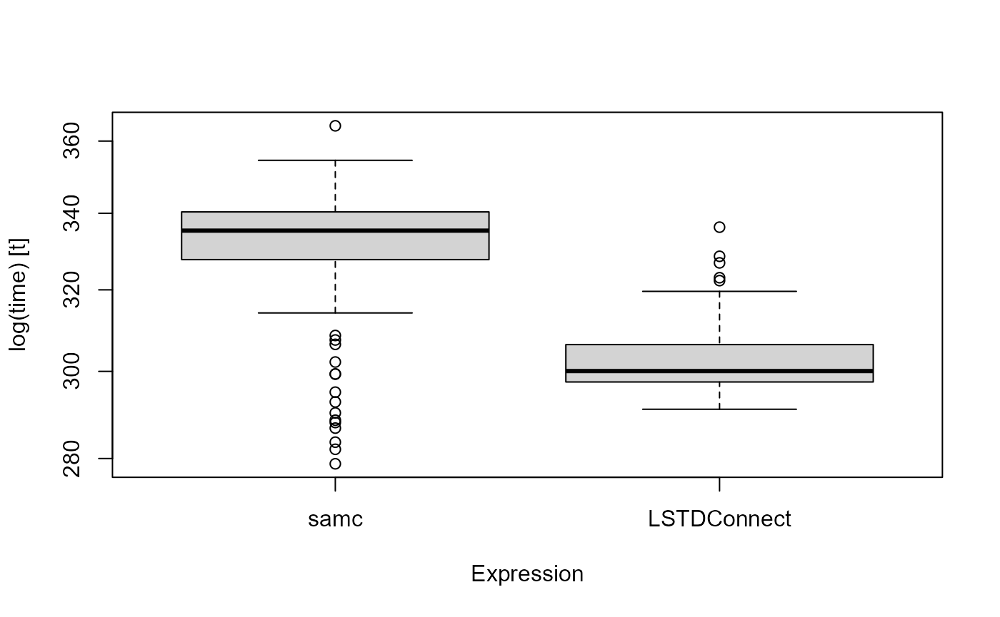

Setup
devtools::install_github("LandSciTech/LSTDConnect")We load the package along with raster and samc. We also load the microbenchmark package to benchmark code performance. We will use ggplot for some visualizations.
library(LSTDConnect)
library(raster)
#> Loading required package: sp
library(samc)
#> The following parameters have officially been removed from the samc() function in version 2:
#> 1) `latlon`: Now handled automatically.
#> 2) `resistance`: `data` should be used in its place.
#> 3) `p_mat`: The P matrix is now provided via `data`.
#> 4) `tr_fun`: See the samc() function documentation for the alternative.
#> 5) `directions`: See the samc() function documentation for the alternative.
#> 6) `override`: See the samc-class documentation for the alternative.
#>
#> Attaching package: 'samc'
#> The following objects are masked from 'package:LSTDConnect':
#>
#> distribution, samc
library(microbenchmark)
#> Warning: package 'microbenchmark' was built under R version 4.1.2
library(ggplot2)Then, access the buolt-in dataset, ghm. This raster represent habitat resistance for a small part of Canada (100 cells squares, at a resolution of 1 km).
Running SAMC in paralell
LSTDconnect is optimized to obtain the transient distributions from a SAMC calculation. We will ise the ghm layer as resistance and will use the opposite layer for occupancy occ such as occ = 1-res.
occ <- 101 - res
plot(occ)Mortality is built from resisatnce such as when resistance is larger than 80, mortality is high whereas under 80, it is low.
high_mort <- 0.25
low_mort <- 0.01
cutoff <- 80
mort <- res
mort[mort >= cutoff] <- high_mort
mort[mort < cutoff] <- low_mortWe first run LSTDConnect::samc to prepare the data for the computation.
samc_cache <- LSTDConnect::samc(resistance = res, absorption = mort,
directions = 8)We then use LSTDConnect::distribution, analogous to samc::distribution, to get the transient distribution of individuals for a given time step. We get a 2 elements list, which can be
dists <- LSTDConnect::distribution(samc = samc_cache, occ = occ, time = 1000)
plot(dists$occ)Comparison with the original samc package
We can compare the results with those given by the samc package.
tr_list <- list(fun = function(x) 1 / mean(x),
dir = 8,
sym = TRUE)
samc_cache_comp <- samc::samc(data = res, absorption = mort, tr_args = tr_list)
#> Warning in showSRID(uprojargs, format = "PROJ", multiline = "NO", prefer_proj
#> = prefer_proj): Discarded datum Unknown based on GRS80 ellipsoid in Proj4
#> definition
dists_comp <- samc::distribution(samc = samc_cache_comp, occ = occ, time = 1000)
dists_mapped <- samc::map(samc_cache_comp, dists_comp)
plot(dists_mapped)
Let’s look at the differences. We can see the error is extremely small
diff <- dists_mapped - dists$occ
plot(diff)
Let’s now benchmark and compare the speed of these two packages by running each process 100 times
t <- 1000
samc_obj <- samc::samc(data = res,
absorption = mort,
tr_args = tr_list)
#> Warning in showSRID(uprojargs, format = "PROJ", multiline = "NO", prefer_proj
#> = prefer_proj): Discarded datum Unknown based on GRS80 ellipsoid in Proj4
#> definition
samc_obj_custom <- LSTDConnect::samc(resistance = res,
absorption = mort,
directions = 8)
mbm <- microbenchmark(
"samc" = {
short_disp <- samc::distribution(samc = samc_obj,
occ = mort,
time = t)
gc()
},
"LSTDConnect" = {
short_disp_custom <- LSTDConnect::distribution(samc = samc_obj_custom,
occ = occ,
time = t)
gc()
},
times = 100,
unit = "s",
control = list(order = "block"))
mbm
#> Unit: seconds
#> expr min lq mean median uq max neval
#> samc 0.2788330 0.3277569 0.3302837 0.3353581 0.3403742 0.3643753 100
#> LSTDConnect 0.2911369 0.2974915 0.3032642 0.3000725 0.3064280 0.3362828 100
boxplot(mbm)